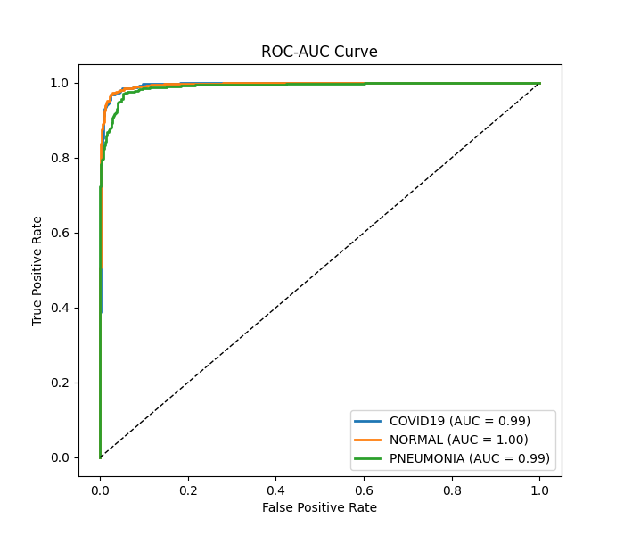

Evaluation Benchmarks
Performance figures evaluated on 1,929 unseen test radiographs: 332 COVID-19, 529 Normal, and 1,068 Pneumonia scans.
Overall Ensemble Accuracy (1,832 / 1,929 correct)
Macro-averaged F1 Score across all three conditions
Average ROC-AUC (COVID-19 0.995, Normal 0.996, Pneumonia 0.990)
Confusion Matrix Analysis
Select an architecture to inspect distribution. Diagonal cells indicate true-positive diagnoses.
Selected Model Accuracy
Gold-tinted diagonal cells indicate correct calls. The weighted soft-voting ensemble maintains an exceptional 97% recall rate on COVID-19, ensuring patient safety by minimizing false negatives.
Condition Diagnostic Scores
Precision reflects diagnostic certainty when a condition is flagged. Recall represents sensitivity across all positive cases in the cohort.
| Condition | Precision | Recall (Sensitivity) | F1 Score | ROC-AUC | Test Scans |
|---|
Multi-Class Discriminative Separation
One-vs-Rest Receiver Operating Characteristic (ROC) curves illustrate the true-positive to false-positive trade-off across all decision thresholds. Curves near the upper-left boundary indicate superior discrimination.
